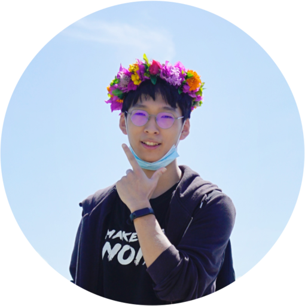

|

|
Zhaoyang Yu
Undergraduate Student
Renmin University of China
Gaoling School of Artificial Intelligence
Ca' Foscari University of Venice (exchange)
TECNOLOGIE E SCIENZE DELL'INFORMAZIONE
yuzhaoyang0713 AT ruc DOT edu DOT cn
Phone.: +86-131-8196-5676
|
Research Interest
Robotics, Neural Networks, Deep Learning, Affective Brain-Computer Interface.
Education Background
I'm currently an undergraduate student at the Gaoling School of AI, Renmin University of China. I'm also an exchange student at Ca'Foscari University of Venice. During my bachelor's studies, I've had the privilege of being advised by Di Hu and have been a proud member of GeWu-Lab.
Work Experience
Microsoft Learn Student Ambassador since 2021.
Projects
-
Mask Detection Based on Huawei Atlas 200DK
Huawei Atlas 200DK is a high-performance AI application developer board that integrates the Ascend 310 AI processor to facilitate quick development and verification.
Deployed YOLOv3-ResNet18 to Huawei Atlas 200DK.
Accelerated inference with the GPU of Huawei Atlas 200DK.
Built dataset and finetuned the model.
-
MI CyberDog Redevelopment
CyberDog is a bionic quadruped robot developed by Xiaomi.
Visual perception with Wudao Wenlan. Shown at 2022 BAAI Conference.
Training multimodal navigation model on the SoundSpaces platform and deploying them in real environments with good results.
More interesting work in progress...
Awards
- 2022 Tencent Youth Game Designer Challenge Merit Award
- 2022 MCM/ICM Contest Meritorious Winner (top 7%)
- 2020-2021 Learning Excellence Scholarship in Renmin University of China
Others
- Languages: Chinese(native), English(IELTS 7.0)
- Hobbies: Badminton, Piano, Guitar